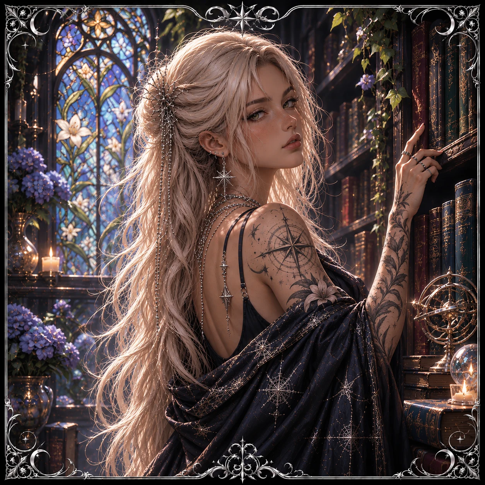

The Sapphire Conservatory
House of Nyx
Forgotten crowns.
Dangerous devotion.
Character bots, original worlds, and stories written in velvet and shadow.
The Character Archive
Every beautiful monster has a story. Find yours.
Looking for a story to start with?
No characters found in these pages. Try another search.
Explore the Worlds
Works in Progress
Latest Dispatches
Fresh arrivals, new chapters, and whispers from the archive.
A home for other worlds.
House of Nyx is a curated collection of original characters, immersive roleplay experiences, and the stories that live between them. Wander a little. Stay as long as you like.
Find me on DreamJourneyAI ↗